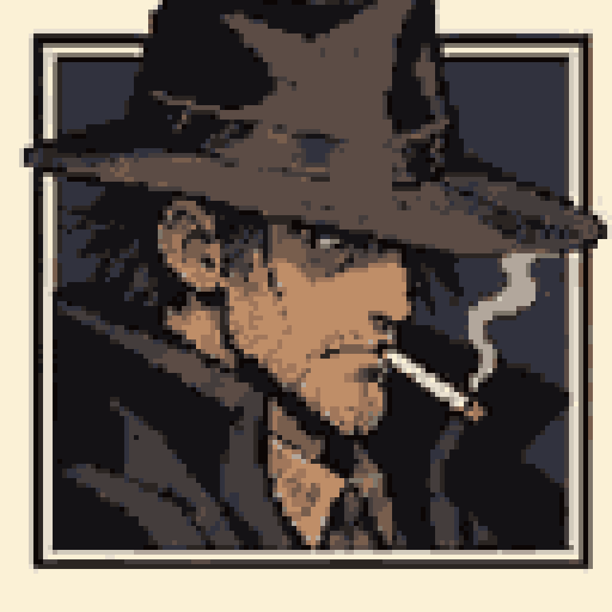

R2C2 抽烟侦探 · 原生像素候选 V2
输入使用已确认的V4原创角色图鉴，不重新生图。GitHub训练了CNN，并对眼睛、鼻子、嘴角、香烟、烟雾与漫画框实施结构保护。保留真实128×128原生网格、14色和8倍整数展示。
未达到「完美像素」验收
模型如果增加杂点或降低源图保真度，就自动回退到清理后的传统基线。两种方法均是实验性候选；精确网格≠艺术家精修。

产物、记录与审计
下载128×128原生像素PNG · 查看1024×1024最近邻预览 · GitHub Actions训练 · 查看修复代码


正在读取 GitHub 像素审计报告…